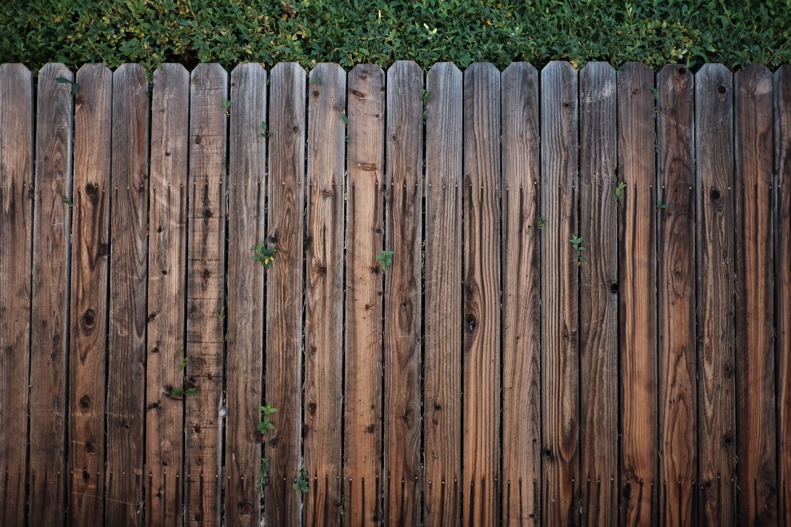

Two Styles
Post-and-Rail or Board: Which Fits Your Yard
Your choice comes down to the look you want and how much privacy you need.
2
Key PointsWhat to expect

01
Post-and-Rail Fences
Boards attach to posts set in the ground and are joined by horizontal rails. Stacked closely, they can read like a picket fence or even a privacy fence. The open design suits decks and patios because it lets in light and air.

02
Board Fences
Vertical boards attach to posts set in the ground, with smooth tops and bottoms. Keep the fence low enough to see over, or build it tall enough to block the view entirely. It works well for screening a large open area or a building you would rather not see from your patio.